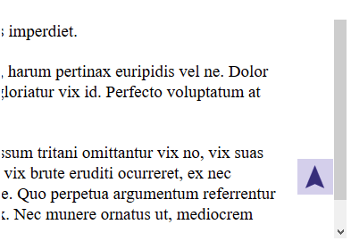

How to create Simple Scroll Back to Top Widge
Improve your website’s user experience with a very simple arrow which fades in when visitors start scrolling the page.
7 July,2021

The page smoothly scrolls back to top when the the button is clicked.
HTML
Add the link below anywhere to your HTML source, for example in the footer before the closing </body> tag. For WordPress use the footer.php or any other template file that’s displayed on all pages. The link has a unique identifier, a tooltip title and contains a special arrow character (➤), so we don’t have to use an image to display the arrow.

CSS

JAVASCRIPT